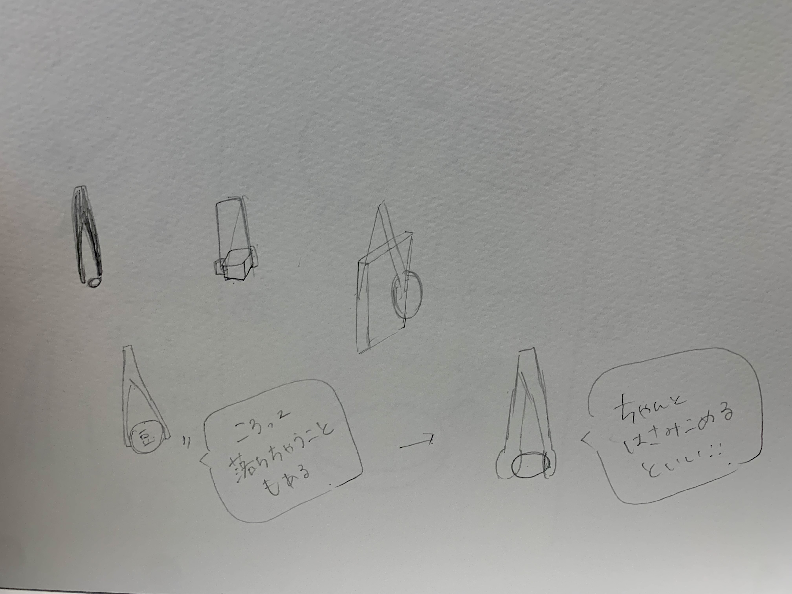
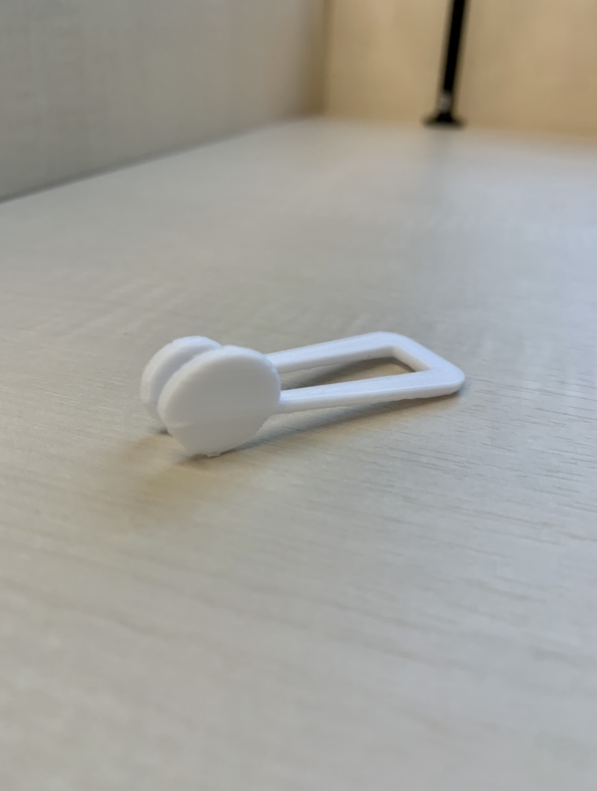
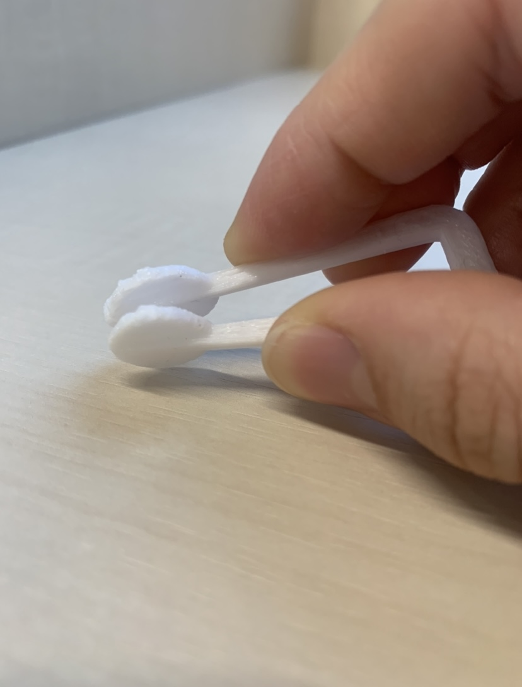

課題１ ピンセット
「つまむ」ではなく「つかむ」ピンセット
【構想段階のスケッチ】

【作った作品の画像】


stlファイル
【作品の説明】
先端が大小サイズの違う丸い円型になっているピンセット
大きさは長さ50㎜×幅2㎜×高さ1.5㎜
【なぜ作ろうと思ったのか】
私たちが普段使っているピンセットは、細かいものをつまむようにして取ったり、挟んで抜くなどしたりして使っていると
思います。しかし、その先端の細長い一般的なピンセットや毛抜きのようなピンセットでは取りにくかったり、
上手く掴むことができなかったりすることもあります。ピンセット特有の手にフィットする小さなサイズ感そのままで、
「取りやすさ」をより重視したものを作りたいと思いました。